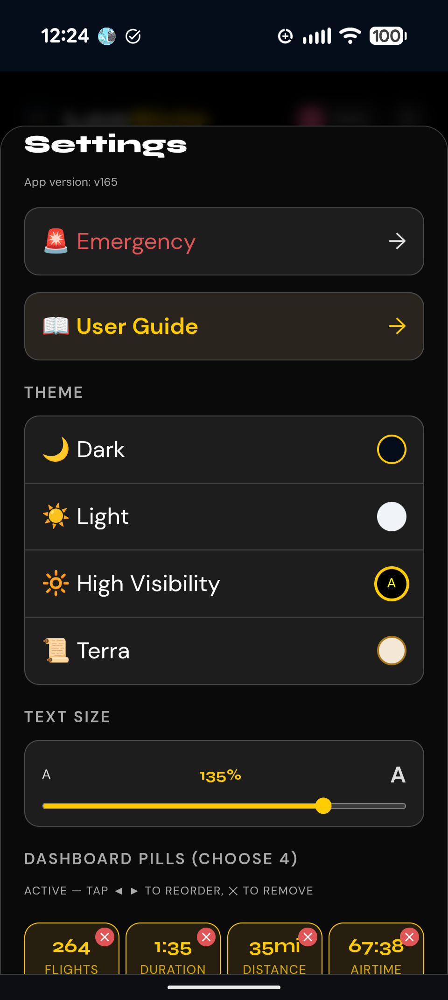
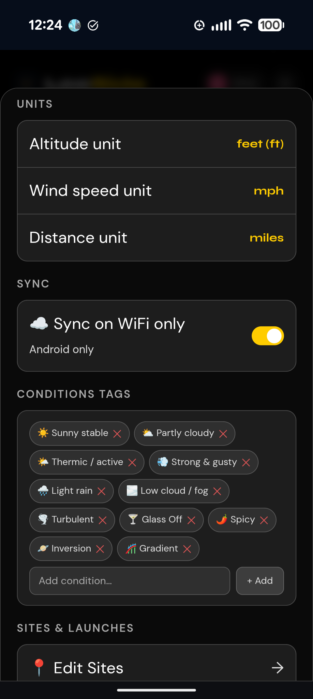

Paragliding Logbook
User Guide
Beta · chnevill.github.io/UpLift
LeeSide is your paragliding logbook that lives on your phone. Your data is stored in your own Google Drive — LeeSide never stores anything on its own servers. It works offline and syncs automatically when you reconnect.
!
Before your first flight — check Settings
Open Settings ⚙ and set two things before you log anything: Starting flight number and airtime (so your logbook continues from your existing total, e.g. 200 flights, 150 hours) and Units (altitude in metres or feet, wind speed, distance). These affect how all your data is recorded.
→
Sign in with Google
Tap Sign in with Google to connect your Google account. Your logbook is saved to your own Google Drive as a single JSON file — nobody else can see it.
→
Offline at the hill
Sign in once. After that, LeeSide opens straight to your logbook even with no signal. All flights you log offline will sync automatically when you get back online.
→
Add to home screen
In Safari tap Share → Add to Home Screen. In Chrome tap ⋮ → Add to Home Screen. The app opens fullscreen.
1
Dashboard pills
Four at-a-glance stats. Fully customisable — go to Settings to choose which 4 stats you want and drag them into your preferred order. Choose from total flights, airtime, altitude, distance, ratings, duration and more. Tap a personal best pill to jump straight to that flight.
2
Navigation tabs
Switch between Logbook, Sites, Notes and Gear. You can also swipe left or right on the content area to move between them. Look for the small 📊 chart icon next to the search bar on Logbook — that opens Stats.
3
Settings ⚙
Tap the gear icon top right to open Settings, or tap your profile picture to access sync, settings and sign out.
4
Log Flight button
The gold button at the bottom opens the flight logging form. Changes label to New Note on the Notes tab.
Tap the gold + Log Flight button to open the flight form. Everything is optional except the site name.
TOP OF FORM

BOTTOM OF FORM

🗺
Site & Launch — sorted by distance
Sites are listed nearest-first based on your current location. If you're within about 2 miles of a saved site, it's pre-filled automatically — handy when you're logging right after landing. Type a new name to add a site or launch — it's remembered for next time.
⏱
Duration numpad
Type digits like a timer — 1, 3, 0 = 1h 30m. 4, 5 = 45 minutes. 2, 0, 0 = 2 hours. The digits flow right to left just like a stopwatch.
🪂
Wing, Harness & Reserve — from your gear list
Dropdowns are populated from your Gear list. The top item is pre-selected automatically. If you have multiple wings, the first in your list is the default — reorder them in Gear to change the default.
👥
Flying With — remembered
Add pilots you flew with. Once added they appear in the dropdown for future flights. Manage your pilot list in Settings.
☁️
Conditions — customisable tags
Tap chips to select conditions. Add your own tags in Settings → Conditions tags. Remove ones you never use.
🚀
Launch Type — remembers your preferred method, per site
Forward, Reverse, or Cobra — LeeSide defaults to whichever launch type you use most often at that specific site (e.g. always reverse at one site, always forward at another). Flying somewhere new? It falls back to your overall history instead. Just tap a different one if this flight was different.
📝
Notes — full formatting support
Tap the Notes field to expand it full screen. Bullet lists, checklists you can tap to check off, headers, warning lines, links and bold text all work here too — see the Notes section for the full list.
Tip: If you log a new wing or harness name via free text in the flight form, it's automatically added to your Gear list. You can then add full specs to it later in the Gear tab.
Your Sites tab is more than a list — it's a running notebook for every site you fly, or want to fly one day. Add a site long before your first flight there and build up local knowledge over time: launch directions, retrieve info, webcams, emergency contacts. By the time you actually fly it, you'll already know it.
1
Search & wind filtering
The search bar filters your sites by name, country, or note text as you type — same as Logbook's search. It also understands live wind conditions: type wind<15 to hide anything currently blown out, gust<20 for gust specifically, or a range like wind>8 <15 for that sweet soaring band. Combine wind and gust together too — wind<15, gust<20 — both apply at once. A site with no current wind reading yet is left out of a wind search rather than guessed at.
2
Live weather on every card
Current wind speed, direction and gusts, plus a forecast strip. Tap the strip to cycle it between hourly, 3-hourly, and a full week view. Tap the wind reading itself to open the full forecast on Windy. The left edge of each card is tinted by wind speed for an at-a-glance read down the list.
3
Distance from you
Sites are shown with how far away they are. Handy for planning ahead, and for keeping aspirational sites — the ones you haven't flown yet — sorted alongside your regulars.
4
Map View
Tap the 🗺️ map icon next to search to see every site plotted on one full-screen map — search for a place by name, switch between Standard, Topo, Dark, Light and Satellite layers, or toggle on 🪂 Skyways to see where pilots actually fly, based on real flight-track data. The map remembers your last layer choice and exactly where you left it, per device, so it picks up where you left off instead of resetting every time. Tap a marker to jump straight to that site's detail.
5
Map, Earth & Airspace
Map opens the site on your Sites Map View, right in the app. Earth and Airspace open Google Earth and OpenAIP externally for the exact site coordinates — useful for checking launch/LZ terrain or nearby restricted airspace before you go.
6
Links & embedded video
In a note, type a line like Directions: https://... and it becomes a tappable link pill — great for site guides, local WhatsApp/Telegram groups, or wind alerts. Use the label embed: with a YouTube link instead, and it plays right in the note as a video — great for launch or webcam footage.
7
Photos
Add photos to the site from Edit Site. Tap any photo to open it full screen, pinch to zoom, or tap the ✕ on a thumbnail to remove it.
8
Editing a site
Tap Edit Site from a site's detail view to manage everything about it on one screen: name, GPS coordinates, launches, notes and photos — one Save for all of it. There's no separate site manager anymore; every site is edited from its own detail view. A Delete Site button sits at the bottom if you need to remove one — existing flights logged there keep showing the site name, it's just removed from future suggestions.
9
Setting coordinates
Type coordinates directly as decimal degrees (37.666369,-122.494513) or degrees/minutes/seconds (37°40'12"N, 122°25'42"W) — whichever you have to hand. Or tap the small 🗺️ map icon inside the field to drop a pin visually: search for a place by name, pan the map under the fixed center pin, switch between Standard, Topo, Dark, Light and Satellite layers, toggle 🪂 Skyways for flight-track data, or tap the locate button to jump to where you are. Tap Set to use that spot. Country fills in automatically as a 3-letter code next to the coordinates — tap it to correct manually if it's ever wrong.
10
Launches
Add as many named launches as a site has — different wind directions, altitudes, or spots. Tap a launch's name to edit it right there, or ✕ to remove it; renaming updates every existing flight that used it automatically. New sites logged from Log a Flight pick up their first launch the same way — nothing extra to set up.
11
Share a site with another LeeSide user
Got a site set up really well and a friend just started using LeeSide? Tap the 📤 icon next to the site's name in Edit Site to send it — name, coordinates, launches and notes — through your phone's normal share sheet (text, WhatsApp, email, whatever you'd use). They import it by tapping Import Shared Site below Add Site on their own Sites tab and pasting what you sent. It always arrives as a brand new, independent site on their end — nothing gets merged with anything they already have, even if they already had a site with the same name.
🚨
Emergency
Every site detail has a red Emergency button showing nearby hospitals for that location, nearest first — with GPS coordinates, a one-tap "Open in Maps" for directions, and a button to call directly. Tap Use this on any other hospital in the list to make it the primary one, or Look up again to refresh the list. You can also call emergency services, your own saved emergency contact, or add site-specific contacts of your own (a local pilot, a landowner, a retrieve driver). Away from a saved site? Tap 🚨 Emergency in Settings or your avatar menu for the same live lookup based on your current location.
Tip: Data use for site weather is genuinely tiny — feel free to add sites all over the world you'd like to fly one day, not just your local ones.
Country, detected automatically: once a site has GPS coordinates, LeeSide quietly looks up its country in the background — no setup needed. That's what powers searching your logbook by country or country code.
Notes list

Note full view

This formatting works the same way in every note in the app — Flights, Sites, and Gear too, not just here.
1
Tap a note to read it
Tapping a note card opens the full-screen read view. Tap Edit Note at the bottom to make changes.
2
Swipe between notes
In the full note view, swipe left or right to move between notes. The counter (e.g. "1 of 5") shows your position. Use ‹ › buttons too.
3
# Headers
Start a line with # followed by a space to turn it into a bold header — handy for titling a site note, e.g. "# Mussel Rock".
4
Link pills
Type a line as Label: https://... and it renders as a tappable pill button showing the label instead of a raw URL — e.g. "Site Guide: https://...". Any other URL typed on its own still becomes a plain tappable link.
5
**Bold** text
Wrap any word or phrase in double asterisks — **like this** — to make it bold in the note's read view.
6
- Bullet lists
Start a line with - (a dash and a space) to turn it into a bullet point. Press Enter at the end of a bullet line and the next line automatically continues the list — no need to retype the dash every time. Press Enter on an empty bullet to exit the list and go back to normal typing.
7
- [ ] Checklists
Write - [ ] task for an unchecked item, or - [x] task for one already done. Tap any checklist line in the read view to check it off — tap again to uncheck it. Same auto-continue as bullet lists when you hit Enter. Great for a pre-flight routine, a repack checklist, or a gear maintenance list that actually gets ticked off.
8
! Warning lines
Start a line with ! followed by a space to make it stand out in red — e.g. "! Reserve overdue for repack". Use it to flag anything you don't want to skim past.
9
Photos
Attach photos to any note. Thumbnails appear in the note card and full-size in the read view. Pinch to zoom on any photo.
10
Drag to reorder
Long-press a note card and drag it up or down to reorder — works with a finger on your phone or a mouse on PC/Mac. Put your most important notes at the top.
11
Share a note with another LeeSide user
Tap the 📤 icon next to a note's title in Edit Note to send it through your phone's normal share sheet. They import it by tapping Import Shared Note at the bottom of their own Notes tab and pasting what you sent — arrives as a brand new, independent note, checklists and all.
Gear list

Reserve detail

1
Three categories
Wing 🪂, Harness 🦺, Reserve 🛟 — each can hold multiple items. Tap + to add. You can have a comp wing, a training wing and a mini wing all listed.
2
Top item = default in Log Flight
When logging a flight, the first item in each gear category is pre-selected. Long-press and drag an item to reorder — put your main wing at the top.
3
Tap an item for overview
Tap any gear item to see a full overview — all specs, airtime from logbook (for wings), repack status (for reserves). Swipe left/right to browse all your gear.
4
Reserve repack alert
If your reserve hasn't been repacked in 6 months, a red warning appears on the gear card and in the overview. Repack date is tracked per reserve.
5
Wing airtime
For each wing, LeeSide calculates total flights and airtime automatically from your logbook. No manual entry needed — it updates every time you log a flight.
6
URL links
Add a link to each gear item — manufacturer page, spec sheet, inspection report. Tap the 🔗 icon on the gear list to open it directly.
7
Notes
Tap the Notes field to expand it full screen. Same formatting as everywhere else in the app — bullet lists, checklists you can tap to check off, headers, warning lines, links and bold text. See the Notes section for the full list.
Tap the 📊 chart icon next to the search bar on your Logbook tab to open Stats.
1
Overview cards
Six key stats: total flights (your real logbook total), total airtime, best duration, best distance, best altitude, and sites flown. Tap a best to open that flight's detail.
2
Charts — reorderable
Launch type pie, flight types pie, and sites flown bar chart. Use the ▲ ▼ arrows on the left of each chart box to reorder them.
TOP OF SETTINGS

BOTTOM OF SETTINGS

1
Data Saver
This setting is per-device — it doesn't sync between your phone, tablet, or computer, so you can have it on where it matters and off where it doesn't. New phones (Android or iPhone) start with it on by default; a new computer starts with it off, since a desktop is essentially never on a genuine cellular connection. Change it any time in Settings on each device.
On Android, it pauses all syncing to Google Drive — flights, notes, settings and photos alike — whenever you're genuinely on cellular data, since Android can tell the difference; turn it off to sync freely on any connection. On iPhone and desktop browsers, which have no way to tell cellular from WiFi, turning it on works differently: your flights, notes and settings still keep syncing normally no matter what — only photos get held back. When photos are waiting, a banner appears — "Data Saver on — tap to sync N photos" — tap it any time to sync them on demand.
On every platform, embedded videos in notes show a "tap to load" warning instead of auto-playing while Data Saver is on, and Windy/Google Earth links ask first too; the Airspace link opens directly either way. Site weather always updates normally regardless, since it's a tiny, separate request.
2
Theme
Choose Dark (default), Light, High Visibility — larger text, pure black background, bright yellow accents, perfect for reading without glasses at the hill — or Terra, a warm parchment tone if you prefer something easier on the eyes than pure dark or pure light.
3
Text size
Drag the slider from 80% to 150% to scale all text in the app up or down. Handy if High Visibility theme alone isn't quite enough, or if you just prefer things a bit smaller.
4
Dashboard pills
Choose your 4 dashboard stats and arrange them with ◀ ▶ arrows. Tap a stat to add it, tap ✕ to remove.
5
Conditions tags
Add, remove and customise the condition chips shown when logging a flight. Make them relevant to your local flying.
6
Pilots list
Pre-add your regular flying buddies so they appear in the "Flying With" dropdown when logging flights.
7
Export Flight Log (PDF)
Generates a print-ready PDF logbook — cover page with your stats, full flight table with all fields. Perfect for licence progression.
8
Export / Import backup (JSON)
Export regularly to keep a backup. The JSON file contains everything — all flights, notes, gear, photos and settings. Import it to restore on any device.
📵
Flying somewhere remote?
Sign in once online. LeeSide works fully offline — log flights normally with no signal. Everything syncs automatically on the drive home.
💾
Back up regularly
Go to Settings → Export backup (JSON) and save the file somewhere safe. Do this before any big updates.
🔍
Powerful search
The search bar on the Logbook tab searches across site, launch, wing, notes, pilots, conditions, flight types and country all at once — type a country name, its 3-letter code, or "USA" to find every flight there. Tap the ☆ next to the search bar to show only your favourite flights.
📲
Install to home screen
Add LeeSide to your home screen for a full screen experience. No browser bar, works offline, loads instantly.
🔆
Can't read in bright sun?
Switch to High Visibility mode in Settings for maximum contrast and larger text. No glasses needed.
📖
Quick access to this guide
Tap the LeeSide logo at the top of the app any time to jump straight back to this user guide.
🛟
Reserve repack reminder
Add your reserve repack date in the Gear tab. LeeSide will warn you when it's been over 6 months — never fly with an overdue reserve.
📄
Going for your P3?
Use Settings → Export Flight Log (PDF) to generate a professional logbook, ready to hand to your examiner.
🗺️
Jump from a flight to its site
Open any flight's detail card and tap the site name — it opens that site's full info (weather, notes, emergency contacts). Tap Close to land right back on the same flight.
🤏
Pinch to zoom photos
Tap any photo in a flight, note or gear item to open the full-screen viewer. Pinch to zoom, then drag to pan around the image. A small number badge shows on the thumbnail when a flight has more than one photo.
🌍
Planning a trip?
Add the site to your Sites tab as soon as you start planning. Gather links, photos and notes over time — by the time you land there, you'll already know the site.